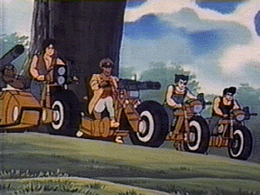
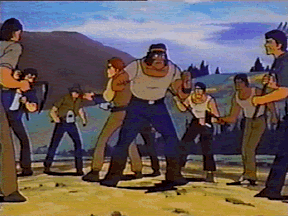
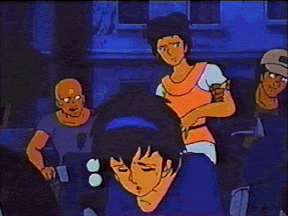
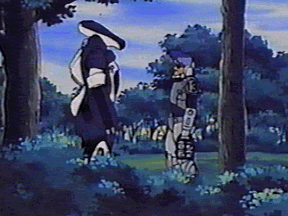
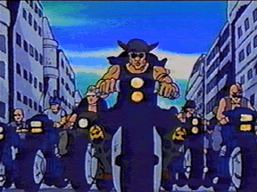

 In every war in human history there have been people who turned against their fellow citizens and worked for the "enemy". The reasons for their defection vary, ranging from a belief in the cause or virtues of the opponent, to the promise of wealth or power in exchange for their services, to the simple desire to survive at any cost. This is especially true in the post-apocalypse Earth of the Invid Wars, where "might makes right" and "survival of the fittest" are the laws of the land.
During the Second Invid War and the Regis' occupation of Earth, human allies were tolerated by the Invid but neither encouraged nor discouraged. The Invid, being a hive-mind society, had practically no experience with treason or greed, and were not sure what to do about these terrans who claimed to be obedient to them. Eventually in some cases human traitors and Invid worked out agreements with each other, exchanging information and captured resistance fighters for supplies and preferential treatment. The cases of Jonathan Wolff and the lake cities are good examples of this. However, the Regis never put much faith in either the loyalty or the ability of the sympathizers, and largely ignored them throughout the course of the war.
The policy towards Invid sympathizers changed radically during the Third Invid War, thanks mostly in part to Lieutenant Anton Kosmos, formerly of the Eastern Block Soviet Independent State (EBSIS) and leader of the Krugatch mercenary group. Lt. Kosmos was one of the first people to notice a difference in the actions and behavior of the new Invid invaders compared to the Regis' troops of the previous war. Unlike that war, the Invid did not seem interested in the domination of the Earth, but rather were concentrating on harvesting large amounts of the Flower of Life. The deployment of Invid mecha was mostly to defend their bases, and they only reacted to attacks by resistance fighters instead of actively seeking them out for extermination. It was obvious that the new Invid were interested only in the Flower of Life and not the Earth itself, and Kosmos saw a great opportunity for himself and his forces.
Anton Kosmos approached the Invid with a proposal. He explained that the Invid were putting themselves in jeopardy by not taking a more active stance against the terran resistance forces. By ignoring the rebellious humans instead of actively seeking out and exterminating them, they were just giving the humans more time to devise a way to defeat them once and for all. In order to ensure the safety of their harvesting, the Invid would need to strike quickly and decisively, shattering humanity's ability to resist and thus ending the threats to the Invid occupation. Kosmos further argued that the best way to defeat a human was using another human, since only a human could fully understand human tendencies and strategies. He proposed that his troops, together with Invid support and technology, could root out and destroy all resistance in North America, and unite it into one state completely loyal to the Invid and their goals.
 The stage 6 Invid were intrigued by Kosmos' plan; elimination of the rebel threat would certainly increase the speed and efficiency of their harvesting and food shipments to New Optera. They decided to form an alliance with Kosmos and the Krugatch, and ordered the forces of several hives in western and centralNorth America to cooperate with them fully. Krugatch scientists worked together with the Invid, developing new weapons and mecha such as the Annihilator and SH-AT combat mecha. (for stats on these mecha, see the Robotech RPG supplement LANCER'S ROCKERS) At first, the new alliance worked; Kosmos succeed in disabling or destroying several major pockets of resistance, including the Detroit Underground and the VIPER-3 resistance base. However, instead of pacifying the resistance, these defeats seemed only to strengthen their determination and resolve. The resistance became a tougher and tougher opponent, and the stage 6 Invid began to be displeased with Lt. Kosmos' performance. In a last-ditch effort to save his dream, Kosmos conceived and constructed the I-K Mobile Sonic Cannon, a monstrous mecha equipped with a new sonic weapon that could level cities. However, the I-K was defeated by the famous freedom fighter Lancer and the troops of the California Freedom League during its first actual combat. The Invid, now totally dissatisfied with Lt. Kosmos, withdrew all support for the Krugatch, which was then destroyed in short order by the California Freedom League.
Although Lt. Kosmos was now gone, his dark legacy continued. While the method had failed, the theory behind Kosmos' actions still made sense to the stage 6 Invid; the only way to guarantee the safety of their crucial harvest mission was the complete domination of the Earth. While the orbiting ring of Invid Space Hives was being completed, the stage 6 Invid reconsidered their entire plan for their mission, which led to a complete reworking of their strategies, tactics, and mecha designs (for more details, see the essay "The New Invid" (still being written)). Some stage 6 Invid also saw wisdom in Kosmos' words about human nature, "the best way to defeat a human was using another human," and acted on that advice.
 Lt. Kosmos and his Krugatch are considered the first examples of FRAGS, a new breed of Invid sympathizers and human traitors. The term "frag" comes from the phrases "fragments of society" or "fragments of the EBSIS and Southern Cross", which are both good descriptions of the typical makeup of frag groups. Frags are tough, ruthless people who have given up their freedom and sworn to serve the Invid in exchange for safety, supplies, and power. They range in size from biker gangs of a dozen individuals to small armies of hundreds who help to manage the Invid slave labor camps. Although most frags are criminals and social outcasts, a sizable percentage of them are trained soldiers from the EBSIS or Southern Cross who are tired of fighting the Invid and wish to join the (currently) winning side. Regardless of origin, all frags are brutal and immoral, and usually are only interested in themselves.
Not all stage 6 Invid use frags; many believe that humanity is good only for slave labor or extermination. And even those who use frags don't trust them completely. When frags are recruited, the Invid implant a cybernetic transmitter in the base of their neck, where it attaches itself to the frag's spinal column. The Invid explain that they need this transmitter in order to identify the frags and tell them apart from the rest of humanity, but in reality they are tracking devices that allow the Invid to keep constant track of where the frags are. Most frags consider it a small price to pay for preferential treatment from the Invid.
NOTE:the transmitter can be extracted from a dead frag and used by a resistance fighter to infiltrate an Invid base, but the Invid will become suspicious if the impostor does not follow his normal procedure or go places he normally shouldn't. Frags don't like impostors much either; they threaten their good standings with their Invid bosses.
Frags are usually used as an extension of the Invid forces in areas that don't warrant a full force of Invid mecha. They are given supplies and weapons, and then are told to follow simple orders such as "Keep the inhabitants of this town peaceful. Kill any resistance fighters or dissidents who speak out against the Invid." As long as they keep the inhabitants in line, frags are pretty much allowed to do as they please with the town.
Another major use of frags are in Invid slave camps. The stage 6 Invid have found that frags make excellent slave-masters, and are usually very creative in finding ways to encourage maximum efficiency from the slaves. However, in a way the frags themselves are prisoners of the camps, since they are restricted from certain areas (like the spaceport) and are not allowed to leave the camps. Frags are NEVER allowed in Invid hives of any kind; no stage 6 Invid will ever trust a human enough to let him into a major Invid base.
 Frags usually interact with the Invid via an Invid representative (a stage 4 or 5 Invid) or by a special Invid communicator provided by their Invid sponsors. Frags NEVER meet directly with the stage 6 Invid that sponsor them; indeed, most frags aren't even aware of the existence of stage 6 Invid. Frags don't question orders; when an Invid tells them to do something, they do it without question. They know that they will continue to have power and the Invid's support so long as they do so, and to oppose their Invid overlords is asking for death. In exchange for their services, the Invid provide frags with supplies, armor, weapons, and mecha (mostly from captured resistance bases) as well as support and occasional protection. The Invid do NOT supply things like food, water, servants, etc.; it is up to the frags themselves to procure their own living supplies. Frags are somewhat sparse in North America; the concentration of the Flower of Life is so great there that the Invid prefer to keep control of that section of the Earth for themselves. They are more common in Africa and South America, or the wastelands of Europe and Russia, where there are few flowers to harvest and many sectors of land to patrol. Frags don't move around much; they know that not all Invid like them, and if they move around much they may find themselves in the territory of an unsympathetic Invid overlord.
Frag groups provide an interesting alternative for GMs as opponents for players in a TIW campaign. Characters may run across small gangs of frags on the road, or a medium sized group holding a town hostage. Or they may be forced to match wits with a large group of frags AND Invid while trying to free prisoners or steal supplies from an Invid slave camp.
Below is a step-by-step process for creating frag groups. It is based on the mercenary creation rules from Rifts Mercenaries, but is slightly different in several aspects (the Invid don't like large, well-armed groups of frags, and don't pay their servants anything).
First, decide on a size for your frag group. A small group of frags is appropriate for a chance encounter on the road, while a medium group is typical of a town occupation force set up by the Invid. Large frag groups are usually reserved for Invid slave camps or major occupied cities. NOTE: Invid will generally not allow a frag gang to grow larger than 150 members; at that point they become hard to control and potentially dangerous.
Each member of a frag group may have a different occupation. The Ganger OCC was created to provide GMs with a generic set of stats for frags, but they may want to customize their group by assigning different OCCs to key members of the frag group. Roll percentile on the table below to randomly determine a frag OCC.
FRAG OCC TABLE 01-15 Ganger O.C.C. (TIW) 16-30 Nonmilitary Personnel O.C.C. (Invid Invasion page 14) 31-45 Mercenary O.C.C. (Invid Invasion page 13) 46-55 Nomad Scout O.C.C. (Invid Invasion page 12) 56-65 EBSIS Military Personnel O.C.C. (Lancer's Rockers page 8) 66-75 SC Tactical Corp O.C.C. (Southern Cross page 22) 76-85 SC Civil Defense Unit O.C.C. (Southern Cross page 33) 86-90 SC Desert Squad O.C.C. (Southern Cross page 40) 91-95 SC Recon Escort Patrol O.C.C. (Southern Cross page 30) 96-00 Special O.C.C. (Roll on table below) SPECIAL FRAG OCCs 01-30 SC Alpha Tactical Armored Corp O.C.C. (Southern Cross page 28) 31-60 SC Humid Climate Offensive Squad O.C.C. (Southern Cross Page 38) 61-80 Mecha Su-Dai Gladiator O.C.C. (Return of the Masters page 25) 81-00 REF Intelligence Agent O.C.C. * (Lancer's Rockers page 8) * The NPC is not actually a frag, but an REF Intelligence Agent posing as a frag to get a closer look at Invid installations and operations. If the PCs get into trouble while tangling with frags (s)he MAY lend a hand, but his/her first priority will be to remain undercover and gather information for the REF.
The Invid provide frags with their choice of weapons captured during raids on resistance fighters, as well as ammo, power packs, etc. It is up to the frags themselves to maintain the weapons; the Invid have no practical knowledge of the guns or their workings. All they provide to the frags is access to captured weapon caches and ammo dumps.
First roll 1D4 to determine how many weapons each special frag has, then roll on the table below to determine each weapon the frag owns. The frag will have 1D6 spare clips for each weapon he rolls on the table below.
FRAG WEAPON TABLE 00-11 RDF 9mm "Wolf" Auto-pistol (Invid Invasion page 59) 12-19 SAL-9 Single Shot Laser Pistol (Invid Invasion page 58) 20-25 PPL-12 Panther Pulse Laser (Southern Cross page 89) 26-30 P-20 Pulse Laser (Southern Cross page 89) 31-35 Lancer Laser Pistol (Southern Cross page 89) 36-39 L.P. Nightstalker (Southern Cross page 89) 40-49 Gallant H-90 Multi-Weapon System (Invid Invasion page 58) 50-54 Gallant H-95 Multi-Weapon System (TIW) 55-58 RFL-100 Rapid-Fire Pulse Laser (Southern Cross page 58) 59-61 Tri-Laser (Southern Cross page 89) 62-70 M-35 "Wolverine" Infantry Assault Rifle (Invid Invasion page 60) 71-75 FAL-2 Automatic Pulse Laser Rifle (Invid Invasion page 58) 76-79 LR-20 Laser Rifle (Southern Cross page 90) 86-80 Krugatch NM-30 Pulse Rifle (Lancer's Rockers page 38) 87-90 PR-30 Pulse Rifle (Southern Cross page 90) 91-94 LR-30 Laser Assault Rifle (Southern Cross page 90) 95-97 Gallant 1000 Multi-Weapon System (TIW) 98-00 RL-6 Heavy Rocket Cannon (Invid Invasion page 41)
Frags are also provided with human body armor captured from resistance fighters. However, the supply of armor is lower than weapons since most captured body armor is destroyed when the rebel inside the armor is killed. Due to this shortage not all frags get body armor. Roll on the table below to see if the frag has a suit of body armor, and if so which type.
FRAG BODY ARMOR 01-30 No Armor 31-50 CVR-3 Body Armor (Invid Invasion page 43) 51-70 EBSIS Field Plate Body Armor (Lancer's Rockers page 38) 71-72 Southern Cross Body Armor-GMP Style (Southern Cross page 21, 85) 73-74 Southern Cross Body Armor-TC Style (Southern Cross page 23, 85) 75-76 Southern Cross Body Armor-ATAC Style (Southern Cross page 29, 85) 77-78 Southern Cross Body Armor-REP Style (Southern Cross page 30, 85) 79-80 Southern Cross Body Armor-CDU Style (Southern Cross page 33, 85) 81-82 Southern Cross Body Armor-CWOS Style (Southern Cross page 36, 85) 83-84 Southern Cross Body Armor-HCOS Style (Southern Cross page 37, 85) 85-86 Southern Cross Body Armor-MOS Style (Southern Cross page 39, 85) 87-88 Southern Cross Body Armor-DS Style (Southern Cross page 40, 85) 89-90 Southern Cross Body Armor-JS Style (Southern Cross page 41, 85) 90-97 CVR-4 Body Armor (TIW) 98-00 CVR-4C Body Armor (TIW)
Larger groups of frags are sometimes given captured mecha to help them with their duties. Frags who are given mecha are naturally watched VERY closely, and any suspicious behavior by the pilot will usually be countered with a "shoot first, ask questions later" response by the Invid. Only Cyclones and small battloids are given to frags; absolutely NO functioning Veritechs or heavily armed mecha are provided, as the stage 6 Invid are not stupid enough to trust the resistance with these types of weaponry. Also, frags will not be allowed to own more than 1 mecha per every 10 members or so the group has.
FRAG MECHA 01-40 No Mecha 41-50 VR-038 Light Cyclone (Invid Invasion page 41) 51-60 VR-052 Battler Cyclone (Invid Invasion page 37) 61-70 VR-041 Saber Cyclone (Invid Invasion page 39) 71-75 VR-135 Forager Cyclone (TIW) 76-80 Civil Defense Corps Light Battloid (Southern Cross page 70) 81-85 EBSIS Soldier Battloid (Southern Cross page 72) 86-90 Tactical Corps Reconnaissance Battloid (Southern Cross page 66) 91-95 Veritech Hover Tank (Southern Cross page 62) - This mecha has been seriously damaged in the past and is now permanently stuck in battloid mode. The hover thrusters are destroyed and the main cannon is missing. However, the MDC values are at full strength, and the EU-11 and triple-barreled autocannon are both functional. 96-00 VAF-6 Veritech Alpha Fighter (Invid Invasion page 47) - This mecha has been seriously damaged in the past and is now permanently stuck in battloid mode. The jet engines are ruined and only 6D6 missiles remain in the MM-60. However, the MDC values are at full strength, and the mecha has a fully functional GU-XX with 2 spare clips.

If a frag group does not own mecha it will usually be provided with several
captured vehicles for ground transportation. In general a frag group will
have one vehicle per every 1-5 members, not counting those members who are
lucky enough to have mecha. Roll on the table below to determine which
vehicle(s) the frag group owns.
FRAG VEHICLES 01-10 Small Motorcycle (Invid Invasion page 62) 11-20 Medium Motorcycle (Invid Invasion page 62) 21-30 Dirt Bike (Invid Invasion page 62) 31-40 Hog (Motorcycle) (Invid Invasion page 62) 41-50 Three-Wheeled (Invid Invasion page 62) 51-55 Blitzkrieg Battle Bike (Lancer's Rockers page 37) 56-60 Hover Cycle (Southern Cross page 77) 61-65 RV-B Dune Buggy (Robotech RPG page 76) 66-70 RDF Land Rover (Robotech RPG page 75) 71-75 RDF Armored Assault Transport AAT-30 (Invid Invasion page 61) 76-80 EBSIS Command Car (Lancer's Rockers page 35) 81-85 GMP Land Rover (Southern Cross page 78) 86-90 Hover Cargo Hauler (Southern Cross page 79) 91-95 APT Tank Carrier (Southern Cross page 80) 96-00 Krugatch Urban Assault Vehicle (Lancer's Rockers page 36)


 |
http://www.mcs.net/~deitrich/index.html deitrich@mcs.net |
Last Updated: |